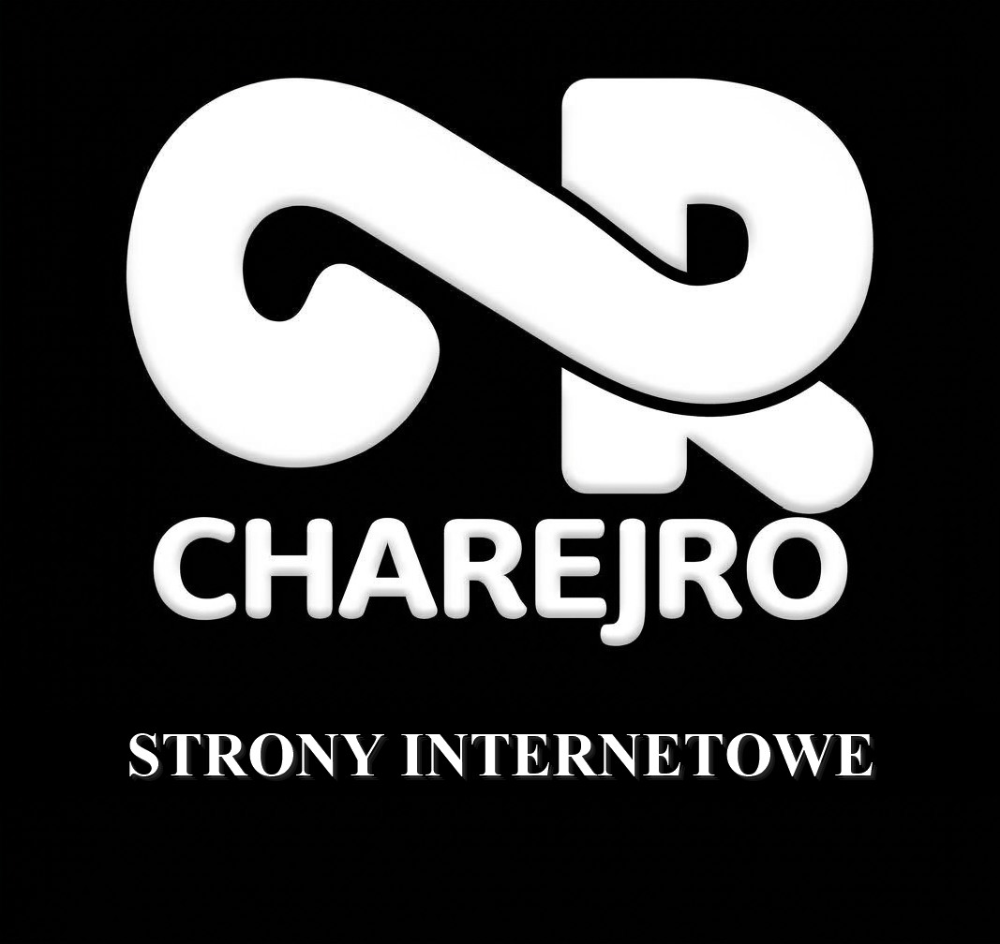
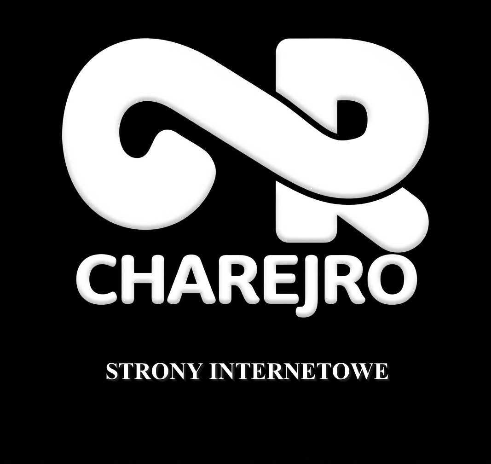

Góra: wersja finalna (560 px) · porównanie przed / po (240 px) · pomniejszenia 120 / 90 px
Pliki: oryginał — logo-ideal.jpg · mniejsza linijka — logo-ideal-v2.jpg · wyrównana na szerokość CR — logo-ideal-v3.jpg. Strona nietknięta.